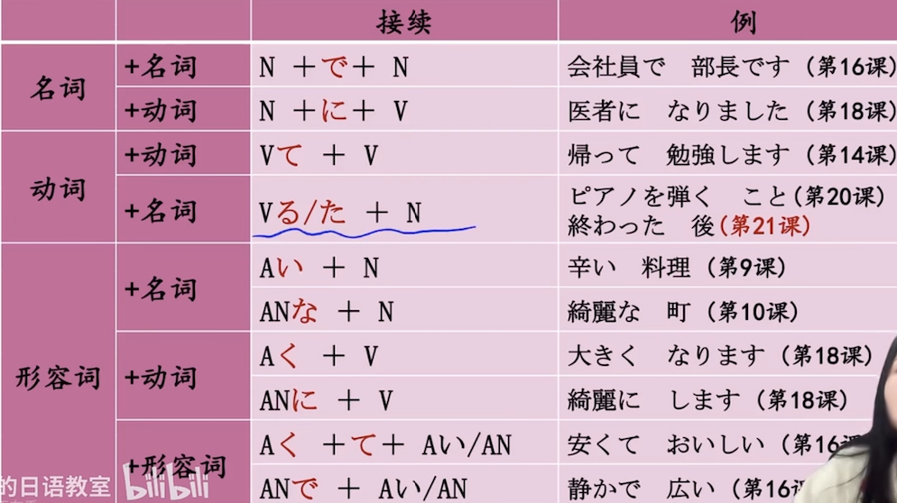

第17课 私は新しい洋服が欲しいです。 —表达愿望
第18课 携帯電話は とても 小さく なりました。 —表变化
第19课 部屋の 鍵を 忘れないで ください。 —V的ない形
第20课 スミスさんは ピアノを 弾く ことが でします。 —V 的基本形
第17课 想要什么
- 私は 新しい 洋服が 欲しいです。
- 私は 映画を 見たいです。
- 一緒に お茶を 飲みませんか。
- ちょっと 休みましょう。
第18课 变化
- 携帯電話は とても 小さく なりました。 —表变化
- テレビの音を 大きく します。 —形容词/名词+动词
- 息子（むすこ）は 医者 に なりました。 —自他动词
- 部屋を 綺麗に して ください。

第19课 ない形
- 部屋の 鍵を 忘れないで ください。
- 李さんは 今日 早く 帰らなければ なりません。
- 明日は 残業（ざんぎょう）しなくてもいいですよ。
- あの人が吉田課長ですよ。
第 20课
- スミスさんはピアノを弾く ことがでます。
- 私の趣味は切手を集める ことです。
- こちらへ切る前に、電話をかけてください。
- 冬休み、どこかへ行きたいです。
「私はペットが欲しいです。」
小野さんの夢はペットと一緒に暮らすことです。
ひ こ
最近、小野さんは引っ越しました。部屋が少し広くなりました。それに、新しいマンションでは、ペットを飼（か）うことができます。
小野さんは ペットショップに 行きました。ペットショップには、いろいろな動物（どうぶつ）が いました。最近は、小さい犬が 人気が あります。小野さんは、チワワにしました。生後（せいご）６ヶ月の オスです。チワワは あまり 大きく なりません。店員が 小野さんに アドバイスしました。
「寝る前に、エサを やらないで ください。」
「清潔（せいけつ）に する ことが 大切（たいせつ）ですが、毎日 シャンプーしなくても いいです。」
犬の名前は 「ケン」に しました。ケンは 小野さんの家族に なりました。
ケンが 来てから、小野さんは、帰宅（きたく）時間が 早く なりました。ケンは まだ「お座り」を する ことが できません。帰宅してから、小野さんは「お座り」を教（し）えます。ケンは 小野さんと遊ぶ ことが 好きです。小野さんも 毎日早く 帰って 遊びたいですが、たまには 残業（ざんぎょう）しなければ なりません。小野さんは、携帯電話の 待受画面（まちうけ がめん）を ケンの 写真に しました。ですから、いつでも、ケンを 見る ことが できます。